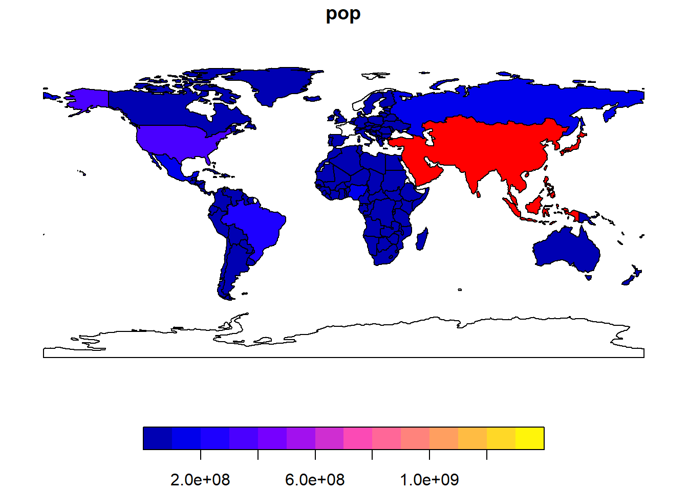
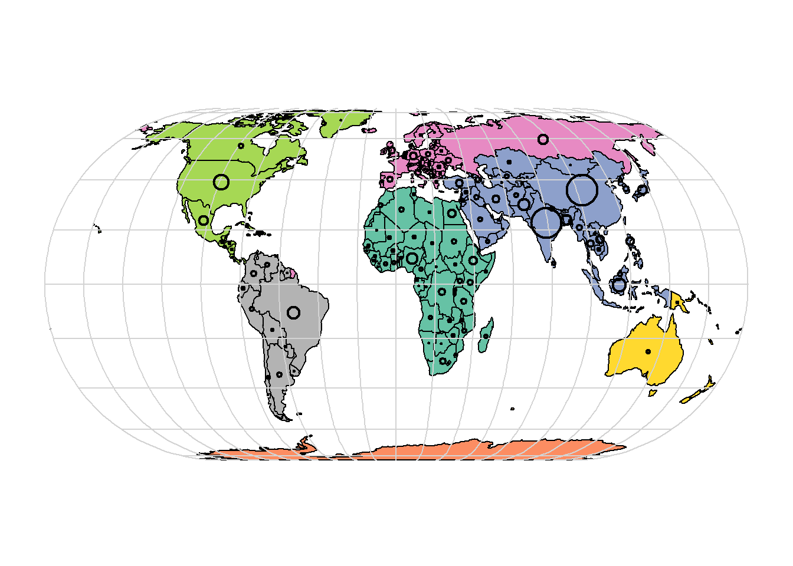
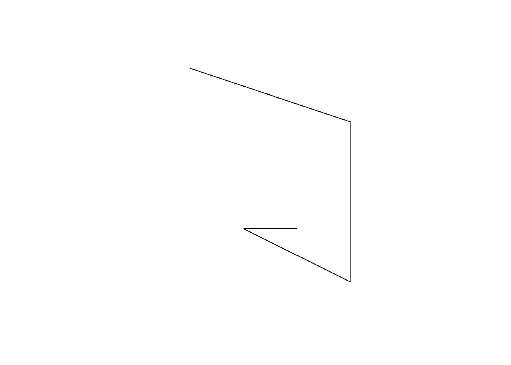
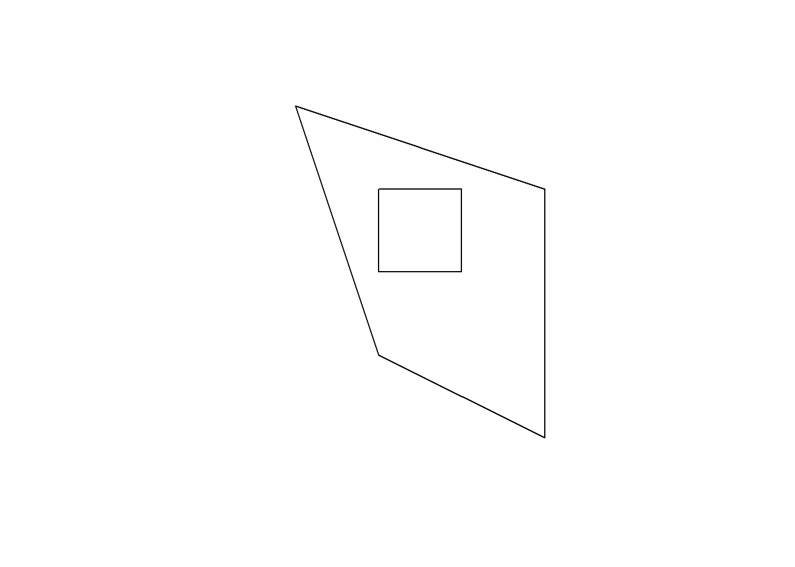
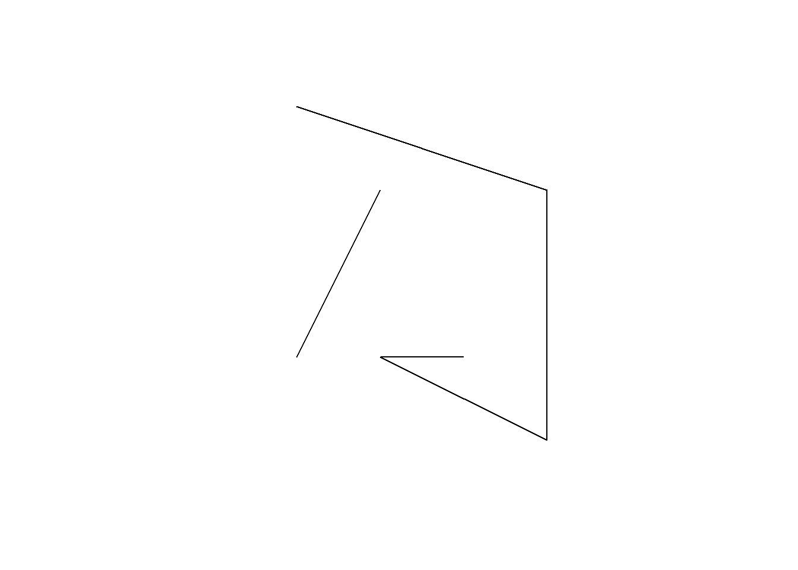
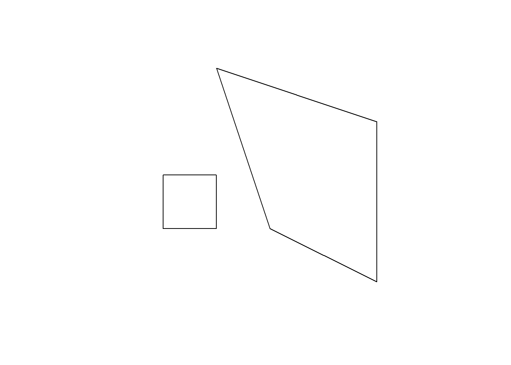
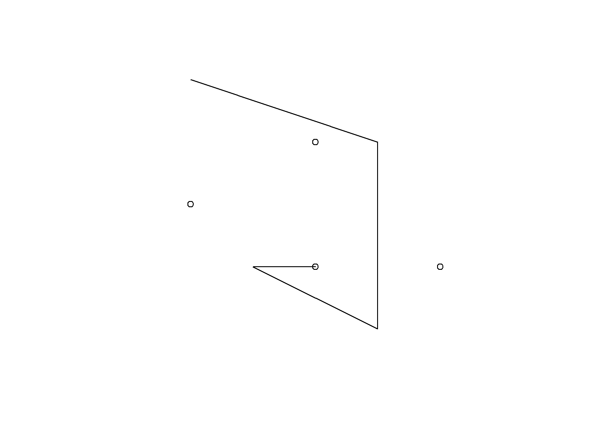
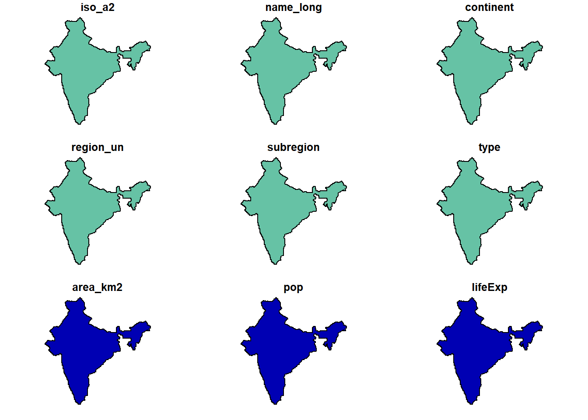
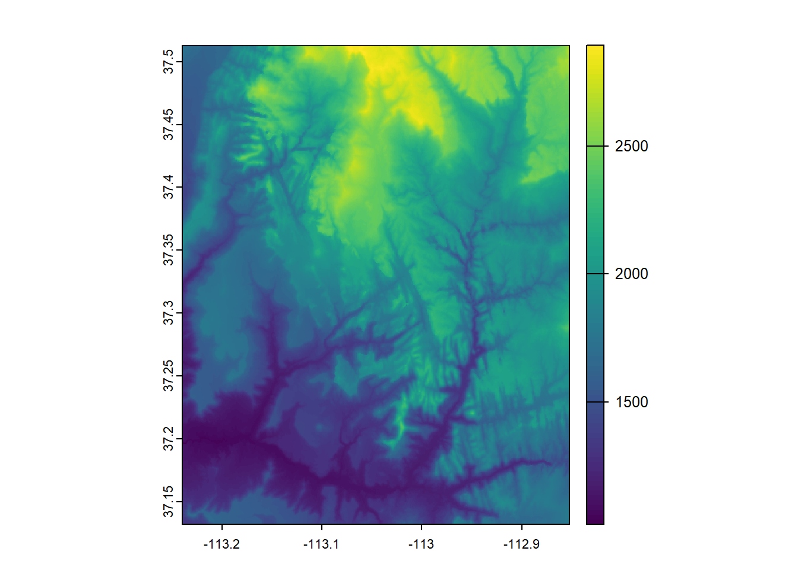

library(sf)
library(terra)
library(spData)
library(spDataLarge)
library(globe)geoR Ch1-3
2 Geographic data in R
fundamental geographic data models: vector and raster:
- The vector data model represents the world using points, lines and polygons.
- The raster data model divides the surface up into cells of constant size.
2.2 Vector data
the spatial coordinates which are at the heart of the geographic vector data model can be represented in R using vector objects.
The geographic vector data model is based on points located within a coordinate reference system (CRS). Points can represent self-standing features (e.g., the location of a bus stop) or they can be linked together to form more complex geometries such as lines and polygons. Most point geometries contain only two dimensions (much less prominent three-dimensional geometries contain an additional z value, typically representing height above sea level).
The sf package provides classes for geographic vector data and a consistent command line interface to important low-level libraries for geocomputation:
- GDAL, for reading, writing and manipulating a wide range of geographic data formats
- PROJ, a powerful library for coordinate system transformations
- GEOS, a planar geometry engine for operations such as calculating buffers and centroids on data with a projected CRS
- S2, a spherical geometry engine written in C++ developed by Google, via the s2 package
Planar geometry engines such as GEOS assume ‘flat’ (projected) coordinates, while spherical geometry engines such as S2 assume unprojected (lon/lat) coordinates.
2.2.1 Introduction to simple features
Simple features is an open standard developed and endorsed by the Open Geospatial Consortium (OGC), a not-for-profit organization
Simple features is a hierarchical data model that represents a wide range of geometry types. Of 18 geometry types supported by the specification, only seven are used in the vast majority of geographic research. These core geometry types are fully supported by the R package sf.

Through s2, an R interface to Google’s spherical geometry library, s2, sf also has access to fast and accurate “measurements and operations on non-planar geometries”
vignette("sf1")We will use the world dataset provided by spData. world is an ‘sf data frame’ containing spatial and attribute columns
class(world)[1] "sf" "tbl_df" "tbl" "data.frame"names(world) [1] "iso_a2" "name_long" "continent" "region_un" "subregion" "type"
[7] "area_km2" "pop" "lifeExp" "gdpPercap" "geom" world$geom is a ‘list column’ that contains all the coordinates of the country polygons.
sf objects can be plotted quickly with the function plot().
plot(world)Warning: plotting the first 9 out of 10 attributes; use max.plot = 10 to plot
all
Note that instead of creating a single map by default for geographic objects, as most GIS programs do, plot()ing sf objects results in a map for each variable in the datasets.
More broadly, treating geographic objects as regular data frames with spatial powers has many advantages, especially if you are already used to working with data frames. The commonly used summary() function, for example, provides a useful overview of the variables within the world object.
summary(world["lifeExp"]) lifeExp geom
Min. :50.62 MULTIPOLYGON :177
1st Qu.:64.96 epsg:4326 : 0
Median :72.87 +proj=long...: 0
Mean :70.85
3rd Qu.:76.78
Max. :83.59
NA's :10 world$geom refers to the spatial element of the world object described above. These geometry columns are ‘list columns’ of class sfc.In turn, sfc objects are composed of one or more objects of class sfg: simple feature geometries that we describe.
Plots are added as layers to existing images by setting add = TRUE.
the subsequent code chunk filters countries in Asia and combines them into a single feature:
world_asia <- world[world$continent == "Asia", ]
asia <- st_union(world_asia)We can now plot the Asian continent over a map of the world. Note that the first plot must only have one facet for add = TRUE to work. If the first plot has a key, reset = FALSE must be used:
plot(world["pop"], reset = FALSE)
plot(asia, add = TRUE, col = "red")
There are various ways to modify maps with sf’s plot() method. Because sf extends base R plotting methods, plot()’s arguments work with sf objects
Figure below illustrates this flexibility by overlaying circles, whose diameters (set with cex =) represent country populations, on a map of the world. An unprojected version of this figure can be created with the following commands
world_proj <- st_transform(world, "+proj=eck4") # change projection
world_cents <- st_centroid(world_proj, of_largest_polygon = TRUE)Warning: st_centroid assumes attributes are constant over geometriespar(mar = c(0, 0, 0, 0))
plot(world_proj["continent"], reset = FALSE, main = "", key.pos = NULL)
g <- st_graticule()
g <- st_transform(g, crs = "+proj=eck4")
plot(g$geometry, add = TRUE, col = "lightgray")
cex <- sqrt(world$pop) / 10000
plot(st_geometry(world_cents), add = TRUE, cex = cex, lwd = 2, graticule = TRUE)
2.2.4 Geometry types
The basis for each geometry type is the point. A point is simply a coordinate in two-, three-, or four-dimensional space.
A linestring is a sequence of points with a straight line connecting the points.
A polygon is a sequence of points that form a closed, non-intersecting ring. Closed means that the first and the last point of a polygon have the same coordinates
2.2.5 The sf class
Simple features consist of two main parts: geometries and non-geographic attributes.
geometries come from an sfc object, while attributes are taken from a data.frame or tibble.

Objects of class sf represent data by combining the attributes (data.frame) with the simple feature geometry column (sfc). They are created with st_sf()
lnd_point <- st_point(c(0.1, 51.5)) # sfg object (value)
print(lnd_point)POINT (0.1 51.5)lnd_geom <- st_sfc(lnd_point, crs = "EPSG:4326") # sfc object (list)
print(lnd_geom)Geometry set for 1 feature
Geometry type: POINT
Dimension: XY
Bounding box: xmin: 0.1 ymin: 51.5 xmax: 0.1 ymax: 51.5
Geodetic CRS: WGS 84POINT (0.1 51.5)lnd_attrib <- data.frame( # data.frame object
name = "London",
temperature = 25,
date = as.Date("2023-06-21")
)
lnd_sf <- st_sf(lnd_attrib, geometry = lnd_geom) # sf object
print(lnd_sf)Simple feature collection with 1 feature and 3 fields
Geometry type: POINT
Dimension: XY
Bounding box: xmin: 0.1 ymin: 51.5 xmax: 0.1 ymax: 51.5
Geodetic CRS: WGS 84
name temperature date geometry
1 London 25 2023-06-21 POINT (0.1 51.5)What just happened? First, the coordinates were used to create the simple feature geometry (sfg). Second, the geometry was converted into a simple feature geometry column (sfc), with a CRS. Third, attributes were stored in a data.frame, which was combined with the sfc object with st_sf(). This results in an sf object.
sf objects actually have two classes, sf and data.frame.
Simple features are simply data frames (square tables), but with spatial attributes stored in a list column, usually called geometry or geom.This duality is central to the concept of simple features: most of the time a sf can be treated as and behaves like a data.frame. Simple features are, in essence, data frames with a spatial extension.
2.2.6 Simple feature geometries (sfg)
The sfg class represents the different simple feature geometry types in R: point, linestring, polygon (and their ‘multi’ equivalents, such as multipoints) or geometry collection.
There are a set of functions to create simple feature geometry objects (sfg) from scratch, if needed. The names of these functions are simple and consistent, as they all start with the st_ prefix and end with the name of the geometry type in lowercase letters:
A point:
st_point()A linestring:
st_linestring()A polygon:
st_polygon()A multipoint:
st_multipoint()A multilinestring:
st_multilinestring()A multipolygon:
st_multipolygon()A geometry collection:
st_geometrycollection()
sfg objects can be created from three base R data types:
A numeric vector: a single point
A matrix: a set of points, where each row represents a point, a multipoint or linestring
A list: a collection of objects such as matrices, multilinestrings or geometry collections
use matrices in the case of multipoint (st_multipoint()) and linestring (st_linestring()) objects:
multipoint_matrix <- rbind(c(5, 2), c(1, 3), c(3, 4), c(3, 2))
st_multipoint(multipoint_matrix) |> print()MULTIPOINT ((5 2), (1 3), (3 4), (3 2))linestring_matrix <- rbind(c(1, 5), c(4, 4), c(4, 1), c(2, 2), c(3, 2))
st_linestring(linestring_matrix) |> print()LINESTRING (1 5, 4 4, 4 1, 2 2, 3 2)st_linestring(linestring_matrix) |> plot()
Finally, use lists for the creation of multilinestrings, (multi-)polygons and geometry collections:
polygon_list <- list(rbind(c(1, 5), c(2, 2), c(4, 1), c(4, 4), c(1, 5)))
st_polygon(polygon_list)POLYGON ((1 5, 2 2, 4 1, 4 4, 1 5))## POLYGON with a hole
polygon_border = rbind(c(1, 5), c(2, 2), c(4, 1), c(4, 4), c(1, 5))
polygon_hole = rbind(c(2, 4), c(3, 4), c(3, 3), c(2, 3), c(2, 4))
polygon_with_hole_list = list(polygon_border, polygon_hole)
st_polygon(polygon_with_hole_list) |> plot()
## MULTILINESTRING
multilinestring_list = list(rbind(c(1, 5), c(4, 4), c(4, 1), c(2, 2), c(3, 2)),
rbind(c(1, 2), c(2, 4)))
st_multilinestring(multilinestring_list) |> plot()
#> MULTILINESTRING ((1 5, 4 4, 4 1, 2 2, 3 2), (1 2, 2 4))## MULTIPOLYGON
multipolygon_list = list(list(rbind(c(1, 5), c(2, 2), c(4, 1), c(4, 4), c(1, 5))),
list(rbind(c(0, 2), c(1, 2), c(1, 3), c(0, 3), c(0, 2))))
st_multipolygon(multipolygon_list) |> plot()
#> MULTIPOLYGON (((1 5, 2 2, 4 1, 4 4, 1 5)), ((0 2, 1 2, 1 3, 0 3, 0 2)))## GEOMETRYCOLLECTION
geometrycollection_list = list(st_multipoint(multipoint_matrix),
st_linestring(linestring_matrix))
st_geometrycollection(geometrycollection_list) |> plot()
#> GEOMETRYCOLLECTION (MULTIPOINT (5 2, 1 3, 3 4, 3 2),
#> LINESTRING (1 5, 4 4, 4 1, 2 2, 3 2))2.2.7 Simple feature columns (sfc)
One sfg object contains only a single simple feature geometry. A simple feature geometry column (sfc) is a list of sfg objects, which is additionally able to contain information about the CRS in use.
For instance, to combine two simple features into one object with two features, we can use the st_sfc() function. This is important since sfc represents the geometry column in sf data frames:
# sfc POINT
point1 = st_point(c(5, 2))
point2 = st_point(c(1, 3))
points_sfc = st_sfc(point1, point2)
points_sfcGeometry set for 2 features
Geometry type: POINT
Dimension: XY
Bounding box: xmin: 1 ymin: 2 xmax: 5 ymax: 3
CRS: NAPOINT (5 2)POINT (1 3)In most cases, an sfc object contains objects of the same geometry type. Therefore, when we convert sfg objects of type polygon into a simple feature geometry column, we would also end up with an sfc object of type polygon, which can be verified with st_geometry_type().
# sfc MULTILINESTRING
multilinestring_list1 = list(rbind(c(1, 5), c(4, 4), c(4, 1), c(2, 2), c(3, 2)),
rbind(c(1, 2), c(2, 4)))
multilinestring1 = st_multilinestring((multilinestring_list1))
multilinestring_list2 = list(rbind(c(2, 9), c(7, 9), c(5, 6), c(4, 7), c(2, 7)),
rbind(c(1, 7), c(3, 8)))
multilinestring2 = st_multilinestring((multilinestring_list2))
multilinestring_sfc = st_sfc(multilinestring1, multilinestring2)
st_geometry_type(multilinestring_sfc)[1] MULTILINESTRING MULTILINESTRING
18 Levels: GEOMETRY POINT LINESTRING POLYGON MULTIPOINT ... TRIANGLEAs mentioned before, sfc objects can additionally store information on the CRS. The default value is NA (Not Available), as can be verified with st_crs():
st_crs(points_sfc)Coordinate Reference System: NAAll geometries in sfc objects must have the same CRS. A CRS can be specified with the crs argument of st_sfc() (or st_sf()), which takes a CRS identifier provided as a text string, such as crs = "EPSG:4326"
points_sfc_wgs = st_sfc(point1, point2, crs = "EPSG:4326")
st_crs(points_sfc_wgs) Coordinate Reference System:
User input: EPSG:4326
wkt:
GEOGCRS["WGS 84",
ENSEMBLE["World Geodetic System 1984 ensemble",
MEMBER["World Geodetic System 1984 (Transit)"],
MEMBER["World Geodetic System 1984 (G730)"],
MEMBER["World Geodetic System 1984 (G873)"],
MEMBER["World Geodetic System 1984 (G1150)"],
MEMBER["World Geodetic System 1984 (G1674)"],
MEMBER["World Geodetic System 1984 (G1762)"],
MEMBER["World Geodetic System 1984 (G2139)"],
MEMBER["World Geodetic System 1984 (G2296)"],
ELLIPSOID["WGS 84",6378137,298.257223563,
LENGTHUNIT["metre",1]],
ENSEMBLEACCURACY[2.0]],
PRIMEM["Greenwich",0,
ANGLEUNIT["degree",0.0174532925199433]],
CS[ellipsoidal,2],
AXIS["geodetic latitude (Lat)",north,
ORDER[1],
ANGLEUNIT["degree",0.0174532925199433]],
AXIS["geodetic longitude (Lon)",east,
ORDER[2],
ANGLEUNIT["degree",0.0174532925199433]],
USAGE[
SCOPE["Horizontal component of 3D system."],
AREA["World."],
BBOX[-90,-180,90,180]],
ID["EPSG",4326]]2.2.9 Spherical geometry operations with S2
Spherical geometry engines are based on the fact that the world is round, while simple mathematical procedures for geocomputation, such as calculating a straight line between two points or the area enclosed by a polygon, assume planar (projected) geometries.
Although potentially useful for describing locations anywhere on Earth using character strings, the main benefit of sf’s interface to S2 is its provision of drop-in functions for calculations such as distance, buffer, and area calculations, as described in sf’s built-in documentation which can be opened with the command vignette("sf7").
sf can run in two modes with respect to S2: on and off. By default the S2 geometry engine is turned on, as can be verified with the following command:
sf_use_s2()[1] TRUEindia = world[world$name_long == "India", ]
india_buffer_with_s2 = st_buffer(india, 1) |> plot() # 1 meterWarning: plotting the first 9 out of 10 attributes; use max.plot = 10 to plot
all
sf_use_s2(FALSE)Spherical geometry (s2) switched off#> Spherical geometry (s2) switched off
india_buffer_without_s2 = st_buffer(india, 1)Warning in st_buffer.sfc(st_geometry(x), dist, nQuadSegs, endCapStyle =
endCapStyle, : st_buffer does not correctly buffer longitude/latitude datadist is assumed to be in decimal degrees (arc_degrees).sf_use_s2(TRUE)Spherical geometry (s2) switched on2.3 Raster data
The spatial raster data model represents the world with the continuous grid of cells (often also called pixels; Figure 2.13:A). This data model often refers to so-called regular grids, in which each cell has the same, constant size – and we will focus on the regular grids in this book only. However, several other types of grids exist, including rotated, sheared, rectilinear, and curvilinear grids
The raster data model usually consists of a raster header and a matrix (with rows and columns) representing equally spaced cells (often also called pixels)
The raster header defines the CRS, the extent and the origin. The origin (or starting point) is frequently the coordinate of the lower left corner of the matrix (the terra package, however, uses the upper left corner, by default)
Starting from the origin, we can easily access and modify each single cell by either using the ID of a cell or by explicitly specifying the rows and columns. This matrix representation avoids storing explicitly the coordinates for the four corner points (in fact, it only stores one coordinate, namely the origin) of each cell corner as would be the case for rectangular vector polygons. This and map algebra make raster processing much more efficient and faster than vector data processing.
Raster maps usually represent continuous phenomena such as elevation, temperature, population density or spectral data.
Discrete features such as soil or land-cover classes can also be represented in the raster data model.
For the illustration of terra concepts, we will use datasets from the spDataLarge
raster.filepath <- system.file("raster/srtm.tif", package = "spDataLarge")
my_rast <- rast(raster.filepath)
class(my_rast)[1] "SpatRaster"
attr(,"package")
[1] "terra"my_rastclass : SpatRaster
dimensions : 457, 465, 1 (nrow, ncol, nlyr)
resolution : 0.0008333333, 0.0008333333 (x, y)
extent : -113.2396, -112.8521, 37.13208, 37.51292 (xmin, xmax, ymin, ymax)
coord. ref. : lon/lat WGS 84 (EPSG:4326)
source : srtm.tif
name : srtm
min value : 1024
max value : 2892 2.3.3 Basic map-making
Similar to the sf package, terra also provides plot() methods for its own classes. As shown in the following command, the plot() function creates a basic raster plot
plot(my_rast)
2.3.4 Raster classes
Rasters can also be created from scratch, using the same rast() function. This is illustrated in the subsequent code chunk, which results in a new SpatRaster object. The resulting raster consists of 36 cells (6 columns and 6 rows specified by nrows and ncols) centered around the Prime Meridian and the Equator (see xmin, xmax, ymin and ymax parameters). Values (vals) are assigned to each cell: 1 to cell 1, 2 to cell 2, and so on. Remember: rast() fills cells row-wise (unlike matrix()) starting at the upper left corner, meaning the top row contains the values 1 to 6, the second 7 to 12, etc.
new_raster <- rast(nrows = 6, ncols = 6,
xmin = -1.5, xmax = 1.5, ymin = -1.5, ymax = 1.5,
vals = 1:36)
rast(new_raster)class : SpatRaster
dimensions : 6, 6, 1 (nrow, ncol, nlyr)
resolution : 0.5, 0.5 (x, y)
extent : -1.5, 1.5, -1.5, 1.5 (xmin, xmax, ymin, ymax)
coord. ref. : lon/lat WGS 84 (CRS84) (OGC:CRS84)